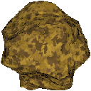
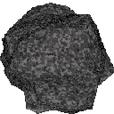
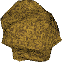
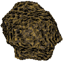
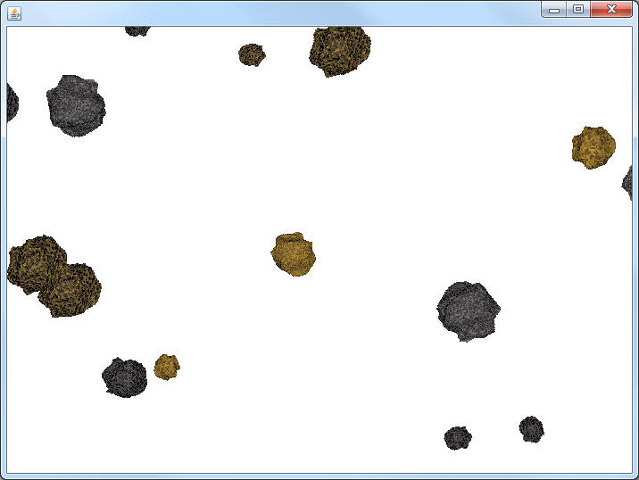
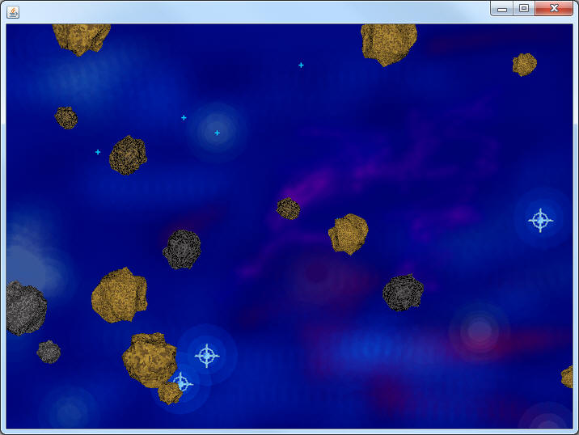

The Asteroid Class




The five asteroids images are stored in the sacco.jar.
Picture p = Picture.loadFromJar("space/asteroid1.png"); will load the first image into the p variable. Similarly "space/asteroid2.png","space/asteroid3.png",etc. will load the other pictures.
For the past few assignments, you've been working on getting blocks to drift, rotate, and teleport similar to the way that asteroids do. There's only a few more things that are needed to create an Asteroids-like experience: Images and proper sizing.
Create a new class named Asteroid that extends RotatingSquare. Because you're extending RotatingSquare you don't have to worry about the moving, the rotating, or the teleporting.
Instance fields:
Our goal is to have three different sizes of Asteroid, so create three static final ints named SMALL, MEDIUM, and LARGE. Start with values of 30, 50, and 70, but feel free to change them later if you're not happy with them.
Add a single Picture as an instance field. Many people mistakenly make 5 Picture variables because there are 5 different pictures, but that is not the case. The one Picture variable will have a random image loaded into it.
Constructor:
Create a default constructor for Asteroid. This is where you have to take care of the appropriate instance fields.
Location - You don't want the default Asteroid to appear at the very center of the screen right off the bat. This could kill our spaceship unfairly. In order to have an asteroid start at the border, either it's x or y value should be set to 0. Use a random number to decide which one should be 0, then put a random number in the other. Don't forget that you should not create new instance fields, use the setX and setY methods that you've inherited.
Size - The width and height need to be set to either SMALL, MEDIUM, or LARGE. Use a random number to determine which one to use.
Image - Picture.loadFromJar("space/asteroid1.png") will return a Picture object that may be used as the instance field, but there are 5 possible images. Use a random number to decide which image to use. Do not have 5 different images as instance fields.
public void paintSprite(Canvas c)
Since we don't want to draw the colorful squares anymore, override the paintSprite method and use the Canvas's drawPicture method to draw the Asteroid Picture. You still want to use your getX, getY, getWidth, and getHeight as you did before. Use DriftingBlock's paintS
AsteroidsBoard:
Similar to before, add a method named loadAsteroids and change the constructor to call it. Run the program and check to make sure the Asteroids are working the way that you want.

Adding the Background:
Right now the AsteroidsBoard's paint method tells it to simply paint all of the Asteroids in the list. What you want is for it to paint a big Picture as the background, and then paint all the Asteroids. You will need to add a Picture as an instance field and load it in the constructor for it to work. The following image is in the sacco.jar with the name "space/bluespace.png"
Running it again should give you the following:
